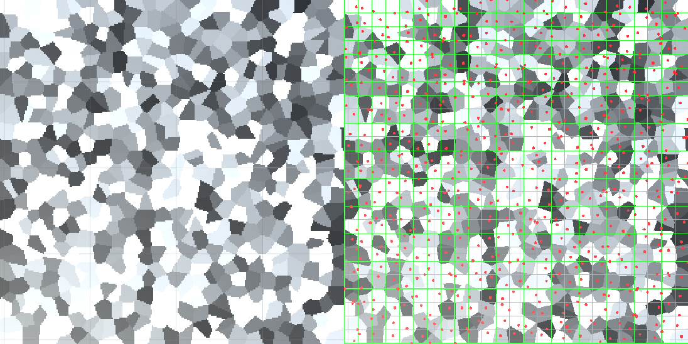
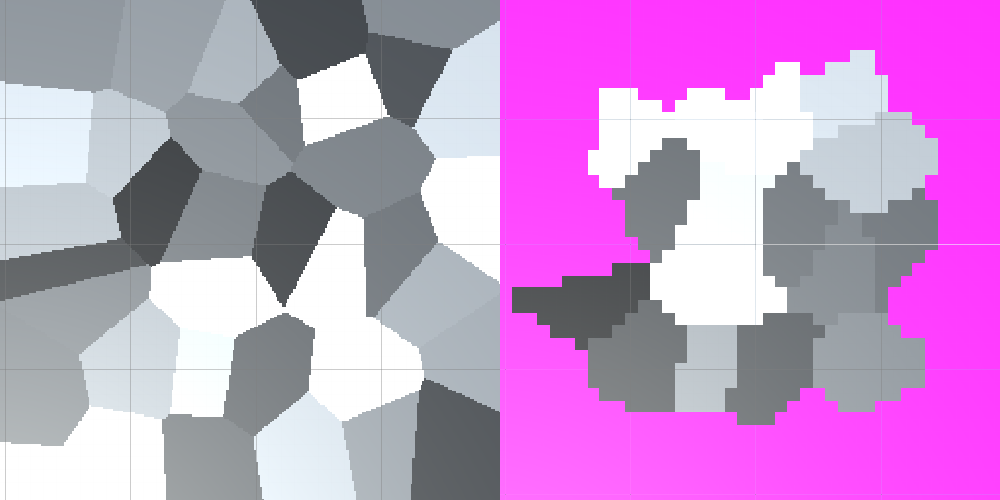
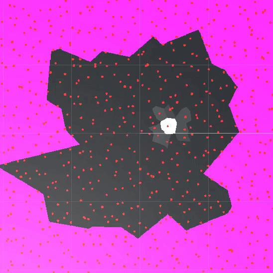
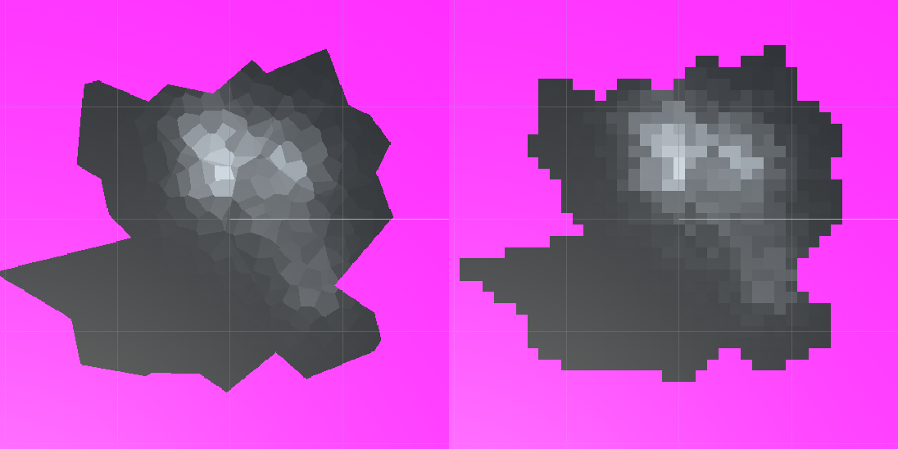
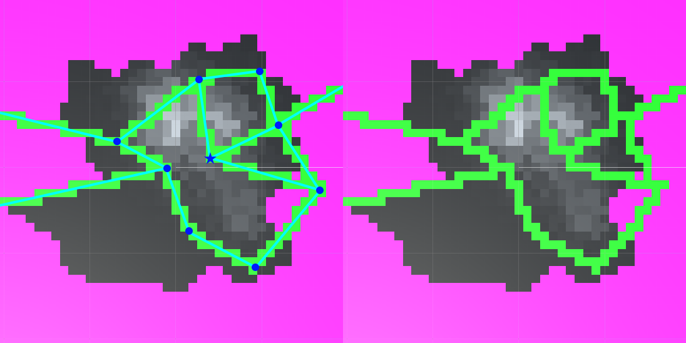
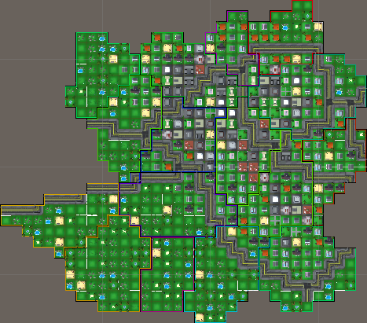
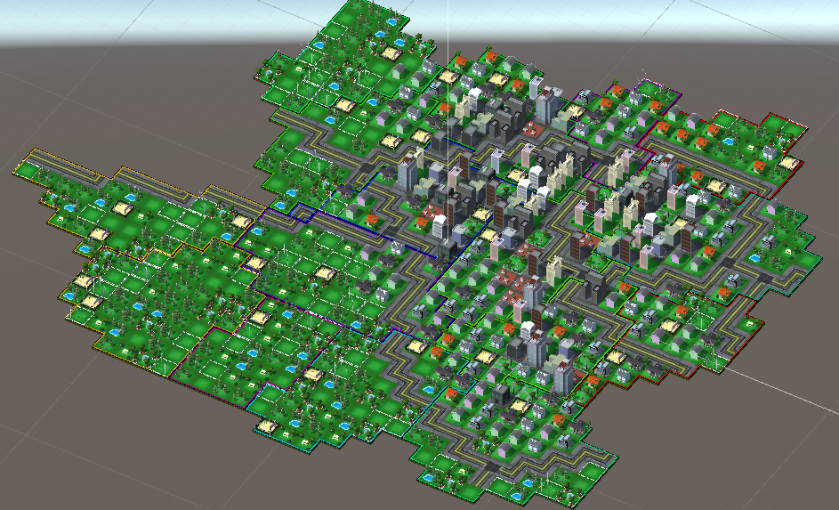

I worked on Culinary Domination as part of a course called Game Lab. In this course, teams are formed of students with diverse skillsets and tasked with developing a student-pitched game concept over the span of a semester. I was one of three programmers for the project. I contributed to many of the game's systems, but one of the issues I was personally tasked with was implementing procedural generation for our game world.

In the end, I found Voronoi diagrams to be quite useful in modelling the city. Doing so gave me the conceptual tools of cells, which could have values assigned to them and be interpolated between. Additionally, whenever the designers requested city districts to be added to the game, it was easily accomplished by overlaying a second Voronoi diagram with larger cells. Below is a quick runthrough of how the city is generated.

Here is an example of the primary diagram mapped to a 2D texture. For this implementation, I divided the diagram into a grid and restricted it to one cell center per grid (Pictured on right). This simplifies storage as well as sampling from the diagram and generally ensures an even distribution of cells. In the final implementation, each cell is assigned an urbanization value which is used to determine various aspects of the tile that will eventually go there, including population density and visuals.

Here is an example of the secondary diagram, the one used to assign city districts. In order to give the map a more interesting shape than just a square, I padded it with an extra district on each side and cropped out any district touching the borders. Also seen on the right, each district has a multiplier for the urbanization of tiles within it. Brighter areas represent an increase and darker areas a decrease.

Next, the city center is grown by selecting a cell near the middle to have a high urbanization value and allowing it to bleed out to surrounding cells. About 20 ticks of this simulation are run, with auxiliary city centers added throughout the process to give the city more shape.

Here you can see the results of combining the two diagrams. On the right, the diagram is being sampled at the same resolution that the tile placement system will use.

The last map feature to assign is highways. To simplify the procedural part of the generation, I wrote a function to rasterize arbitratry lines onto the tile data. This resulted in some excess road tiles that needed to be cleaned up but massively simplified the process of describing how roads are allowed to be placed.

